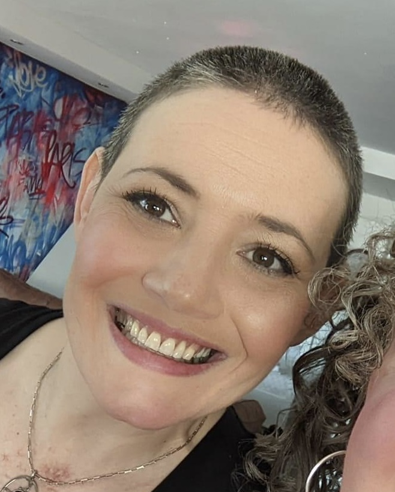

About
Hi my name is Katherine but please call me Kat. Welcome to my portfolio for Code Nation Masters Code.I have recently been awared the Grayce Scholarship.
I have recently completed the Develop Code course with Nation course. This course was ran remotely using collaborative software and allowed me to plan and create projects to show case my skills whilst gain experience developing projects as part of a team.I have enjoyed studying with the Open University and have gained a strong knowledge of the subjects I have studied.
Throughout my studies I have volunteered for Wirral Code Club who provide free coding session for children at local libraries. Recently we have started a CoderDojo which will allow us to work with our community and bring coding to families across Wirral.